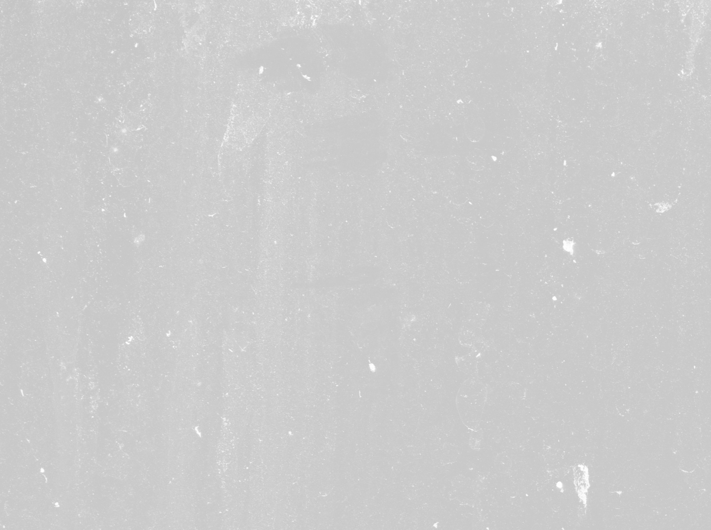
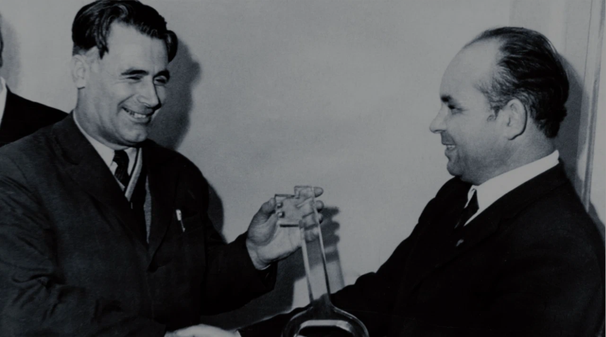
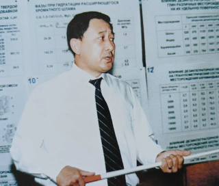
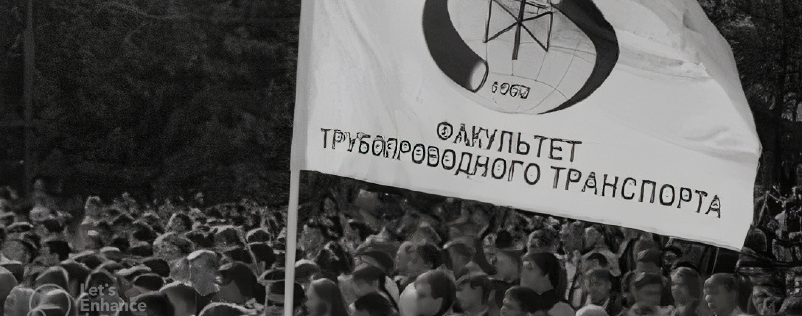
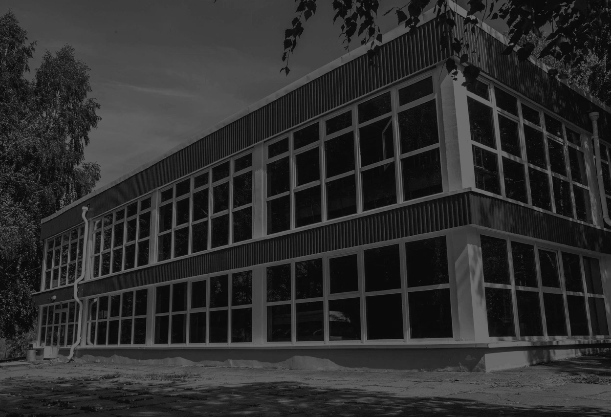

19701979
Ректором института назначен доктор технических наук, профессор Загидулла Исхакович Сюняев.
1970

Загидулла Исхакович
Сюняев
Сюняев
Загидулла Исхакович
Сюняев
Сюняев
За активное участие в студенческом строительном движении студент Х.Г. Нагуманов награжден медалью.
1971
За трудовое отличие
Медаль За трудовое отличие
Профессор И.Л. Мархасин стал лауреатом премии им. И.М. Губкина.
“Дайте созреть и окрепнуть внутреннему человеку, дайте ему время и средства подчинить себе наружного, и у нас будут гениальные ученые, а главное - люди!”
1971
“Дайте созреть и окрепнуть внутреннему человеку, дайте ему время и средства подчинить себе наружного, и у нас будут гениальные ученые, а главное - люди!”
Разработанная на технологическом факультете новая форма обучения обеспечивала органическое соединение процесса образования и студенческих научно-исследовательских работ, имевших прикладное значение.
На технологическом факультете создан первый в стране студенческий научно-исследовательский институт.
Вручение ректору УНИ Сюняеву З.И. символического ключа для открытия СтудНИИ
1971
Вручение ректору УНИ Сюняеву З.И. символического ключа для открытия СтудНИИ

На технологическом факультете создан первый в стране студенческий научно-исследовательский институт.
Разработанная на технологическом факультете новая форма обучения обеспечивала органическое соединение процесса образования и студенческих научно-исследовательских работ, имевших прикладное значение.
1971

На базе института впервые проведена Всесоюзная научно-техническая конференция.
В институте состоялась первая защита докторской диссертации, представленной заведующим кафедрой В.Ф. Новоселовым.
1972
1972
В институте состоялась первая защита докторской диссертации, представленной заведующим кафедрой В.Ф. Новоселовым.
Профилактическому средству «Ниогрин» присвоен государственный Знак качества.
1972
Модель экстракционной колонны, разработанная коллективом кафедры «Машины и аппараты химических производств», удостоена медали ВДНХ.
1972
Профилактическому средству «Ниогрин» присвоен государственный Знак качества.
экстракционные колонны
1973
Модель экстракционной колонны, разработанная коллективом кафедры «Машины и аппараты химических производств», удостоена медали ВДНХ.
1973
Двум художественным коллективам — хору и ансамблю народного танца — присвоено звание народных.
1973
Студенческому научно-исследовательскому институту технологического факультета присуждена премия Ленинского комсомола.
Ленинский комсомол
1973
Сдан в эксплуатацию двенадцатиэтажный дом для аспирантов и молодых преподавателей по ул. Комарова 18. Позже (1976 год) было построено 12-этажное общежитие факультета повышения квалификации УНИ (Комарова, 12), а в 1982 году - еще один 12-этажный дом для сотрудников и преподавателей вуза (Комарова, 14).
На снимке: жилые дома преподавателей и сотрудников Уфимского нефтяного по ул. Комарова.
1973
Впервые состоялся обмен студенческими строительными отрядами с высшей технологической школой г. Мерзебурга (округ Галле, ГДР).
Открыт первый в стране факультет трубопроводного транспорта. Деканом факультета назначен А.И. Гольянов
1975

Профилакторий института признан лучшим в РСФСР
1975
Ректором института назначен доктор технических наук, профессор Александр Иванович Спивак.
1976
Александр Иванович Спивак
Сдан в эксплуатацию корпус горно-нефтяного факультета с буровым стендом.
1977
Сдана в эксплуатацию студенческая столовая на 320 посадочных мест в СОЛУНИ.
1978

320 мест